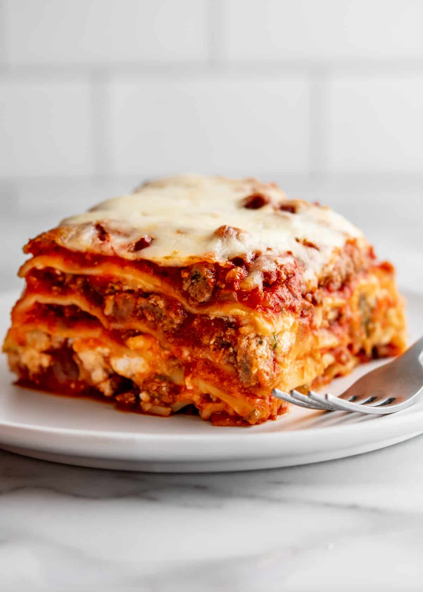

Back to homepage
Best Lasagna Recipe

Description:
This is the best lasgna recipe ever taught to me my by very mother whose a professional chef. She was tought how to cook this home made recipe from generations of italian heritage.
Ingredients:
For the meat sauce
- 1 lb ground beef (and/or Italian sausage)
- 1/2 onion, chopped
- 2 cloves garlic, minced
- 28 oz can crushed tomatoes
- 15 oz can tomato sauce
- 2 tbsp fresh parsley, chopped
- 1 tsp dried basil
- 1 tsp dried oregano
- Salt and pepper to taste
For the Cheese Mixture:
- 15 oz container ricotta cheese
- 1 large egg, beaten
- 1/4 cup Parmesan cheese, plus extra for topping
- 2 tbsp fresh parsley, chopped
For Assembly:
-
9-12 lasagna noodles (regular, not "no-boil")
-
3-4 cups shredded mozzarella cheese
-
Cooking Spray
Instructions:
- Prepare the Sauce: In a large pot or skillet over medium heat, cook the ground beef and/or sausage and chopped onion until the meat is browned and the onion is translucent. Drain any excess fat. Stir in the minced garlic, crushed tomatoes, tomato sauce, basil, oregano, 2 tablespoons of parsley, and salt and pepper. Let the sauce simmer for at least 15-30 minutes so the flavors can meld.
- Cook the Noodles: While the sauce simmers, bring a large pot of lightly salted water to a boil. Add the lasagna noodles and cook until al dente (firm to the bite) according to package directions. Drain the noodles and lay them flat on clean kitchen towels or parchment paper to prevent them from sticking together.
- Make the Cheese Mixture: In a medium bowl, combine the ricotta cheese, beaten egg, 1/4 cup of Parmesan cheese, remaining parsley, and a dash of salt and pepper. Mix well.
- Assemble the Lasagna: Preheat your oven to 375°F (190°C). Lightly grease a 9x13-inch baking dish with cooking spray.
- Layer 1: Spread about 1/2 cup of meat sauce evenly across the bottom of the dish. Lay 3 or 4 noodles over the sauce, overlapping slightly if needed.
- Layer 2: Spread about 1/3 of the ricotta mixture over the noodles. Top with about 1 cup of mozzarella cheese, then spoon about 1/3 of the remaining meat sauce over the cheese.
- Repeat: Add another layer of noodles, followed by the ricotta mixture, mozzarella, and meat sauce. Repeat one more time, until you have 3 or 4 layers of noodles and filling.
- Top Layer: Finish with a final layer of noodles, the remaining sauce, and the rest of the mozzarella and Parmesan cheeses.
- Bake: Cover the baking dish tightly with aluminum foil (you can spray the underside of the foil with nonstick spray to keep the cheese from sticking). Bake in the preheated oven for 45 minutes.
- Broil and Rest: Remove the foil and bake for another 15 minutes, or until the cheese is golden brown and bubbly. Let the lasagna rest for at least 15 minutes before slicing and serving. This is a crucial step that allows the layers to set.